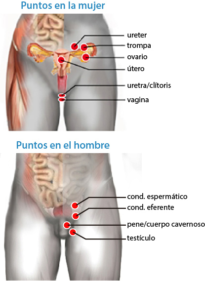

PUNTOS DE LA MUJER
305. Saco de Douglas
305. Saco de Douglas
Vena Femoral
Norkwalk
306. Ovario
306. Ovario
Ovario:
Disfución ovárica
Hipófisis:
Dismenorrea
Suprarrenales:
Proteus vulgaris
Tiroides:
Materialismo
Riñón:
Ovulación, falta de
Utero:
Embarazo "Durán"
307. Trompa de Falopio
307. Trompa de Falopio
Trompa de Falopio:
Parvovirus
Ovario:
Embarazo ectópico "Paty"
308. Útero
308. Útero
Útero:
Falso embarazo "Roberta"
Recto:
Papiloma
Atlas:
Vaginitis
Hígado:
Embarazo molar
Ovario:
Embarazo "Durán"
Recto:
Intolerancia alimentaria
Riñón:
Miomas
Sacro:
Endometriosis
309. Vagina
309. Vagina
Vagina:
Yersinia pestis
Garganta:
Yersinia pestis
Garganta:
Enterobacter pneumoniae
Garganta:
Estafilococo Aureus
Riñón:
E. Coli
Vagina:
Reservorio virus "Yolanda"
310. Clítoris
310. Clítoris
Clítoris
Espiroquetas
Pelvis:
Treponema palidum
Sacro:
Espiroquetas
Uretra:
Espiroquetas
Hueso púbico:
Espiroquetas
Suprapúbico:
Leptospira
Ano:
Cándida albicans
PUNTOS DEL HOMBRE
311. Cuerpo cavernoso
311. Cuerpo cavernoso
Cuerpo cavernoso
Disfunción erectil
312. Pene
312. Pene
Timo:
Disfunción erectil
313. Testículo
313. Testículo
Testículo:
Yersinia Pestis
Angina:
Estreptococo pyógenes
Hiato:
Helicobacter pilori
Cardias:
Helicobacter pilori
Recto:
Papiloma
Oído:
Malignidad
314. Cond. espermático
314. Conducto espermático
Conducto espermático:
Tuberculosis
Conducto espermático::
Ebola
315. Cond. eferente
315. Conducto eferente
Laringe:
Tuberculosis
PUNTOS INESPECIFICOS
316. Muñón
316. Muñón
Muñón:
Reservorio Universal
317. Lunar
317. Lunar
Riñón:
Hanta virus
318. Mordida
318. Mordida
Axila
Reservorio de rabia
319. Lesión
319. Lesión
Riñón
Cura heridas
320. Vacuna
320. Vacuna
Supraespinoso
Tuberculosis (Reserv?)
321. Corporis
321. Corporis
Riñón?
Tiña en la piel
Rastreo Otros
Cabeza
Cuello
Brazos
Torso
Dorso
Piernas
Otros
Lista de puntos